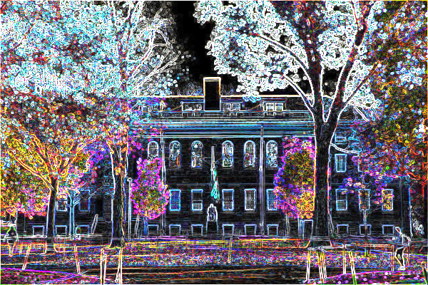

Convert image into Grayscale, Reflect, Edges, Blur image

In this project i designed a c program which takes image as an input and user can
apply variou filter like grayscale, edges, reflect and blur. output image will be
converted image which filter user selected.